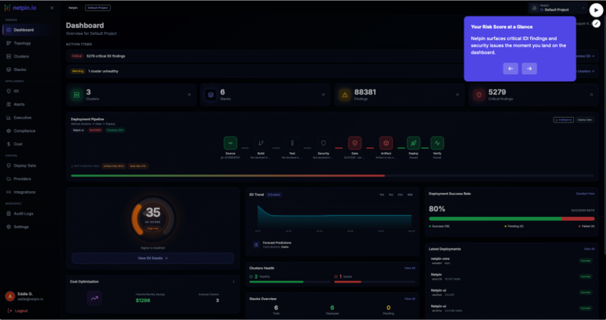
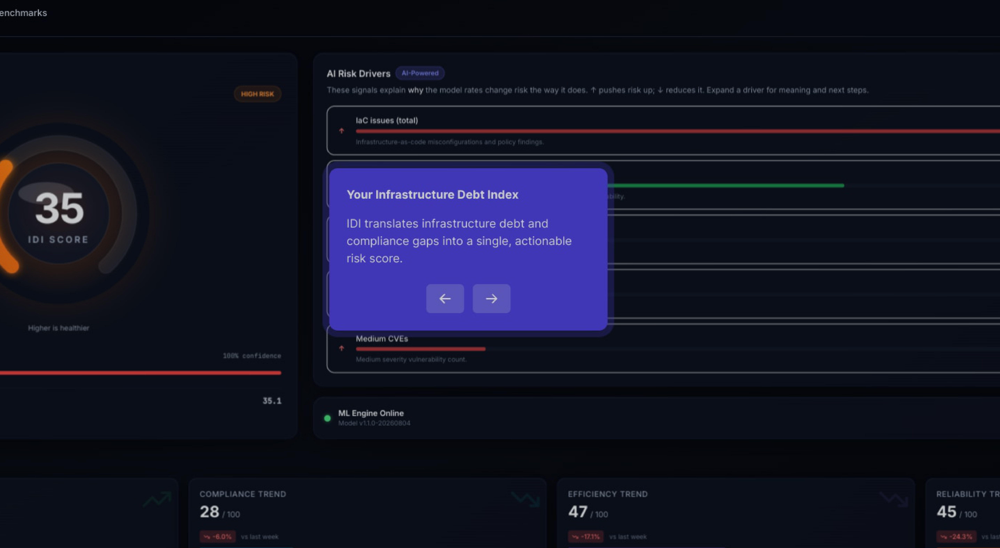
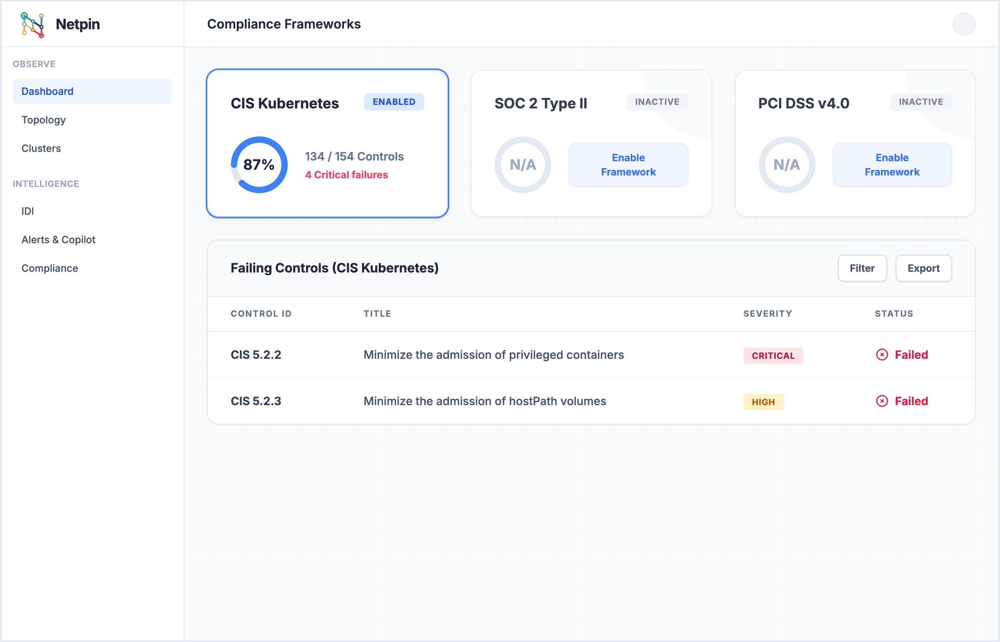
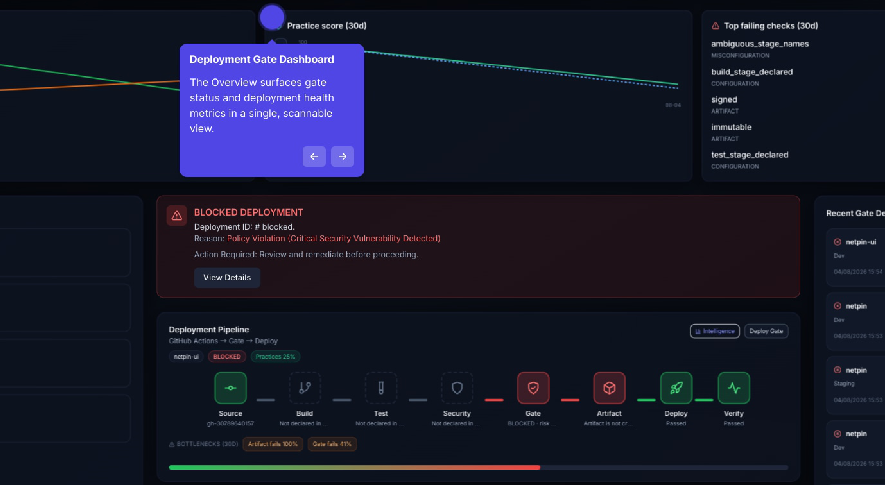
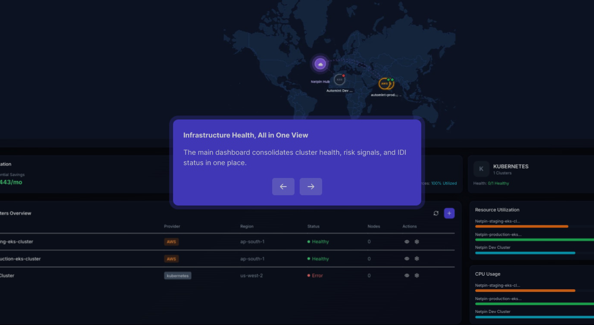
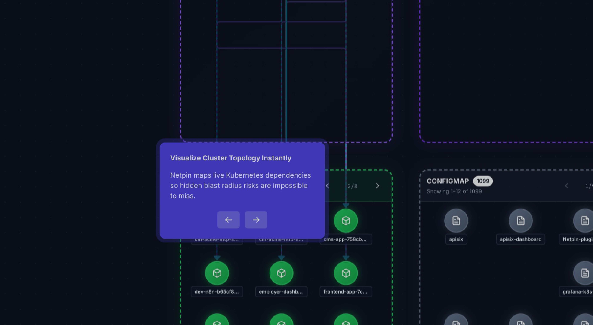
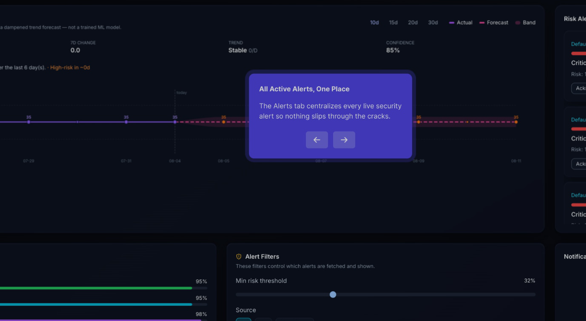

Netpin is the intelligence layer for your cloud, Kubernetes and CI/CD. It discovers everything you run, catches drift the moment it happens, scores your infrastructure debt, proves compliance and stops risky releases — all from read-only access, in one place.

Dashboards, cloud consoles, scanners and CI logs each hold a piece of the truth. Nobody can see the whole picture — so hotfixes go unreviewed, compliance gaps pile up, spend creeps and releases break things nobody knew were connected.
"Someone changed production by hand last week. Who? What did it break?"
With NetpinDrift Intelligence shows the exact field that changed, who changed it, what it affects and the command to fix it.
"Are we ready for the SOC 2 audit? Nobody really knows."
With NetpinCompliance checks every account, cluster and repository against 10 frameworks, with evidence and a fix-first list.
"Is this release safe to ship on a Friday?"
With NetpinDeploy Gate scores the change against drift, debt, blast radius and history — and blocks it in CI if it is too risky.
Netpin connects to the tools you already use and answers the questions that matter — from "what do we run?" to "is this release safe?"
Detects every difference between your code — Kubernetes manifests, Helm, Terraform, Argo CD — and what is actually running. Shows who changed it, what it affects and how to fix it.
How healthy are we?One 0–100 score for health, security, compliance and operations — with a forecast and a ranked list of the fixes that raise it most.
Are we compliant?Automated controls mapped to CIS, SOC 2, PCI DSS, HIPAA, ISO 27001, NIST 800-53 and more — across cloud accounts, clusters and source control.
Is this release safe?Approve, block or route releases for review from GitHub Actions, GitLab CI or Jenkins — based on pipeline quality and real infrastructure risk.
What are we spending?Resource-level cloud and Kubernetes cost, verified against your bill, with a month-end forecast and savings that never count a dollar twice.
What do we run?A live map of every cloud resource, cluster and workload and how they connect — with the blast radius of any change.
What happens next?Forecasts when risk will cross a threshold, deduplicated alerts to Slack, PagerDuty and email, and an AI copilot that explains every finding.
How do we fix it?Every finding comes with what is wrong, why it matters, the affected services, step-by-step remediation and how to verify the fix.
What should leadership know?Letter grades for health, security, audit readiness, cost and delivery — plus the decisions that need attention, in plain business language.
A kubectl edit at 2am, a security group opened in the console, Terraform merged but
never applied. Netpin compares what you declared with what is running — continuously — and
tells you exactly what drifted and why it matters.
Kubernetes manifests, Helm releases, Argo CD and a three-way Terraform code ↔ state ↔ cloud comparison
Attribution from Kubernetes field managers and AWS CloudTrail, plus the services and public endpoints in the blast radius
Revert with a generated patch, adopt the change into code, or import unmanaged resources into Terraform
registry/checkout:1.42.0Helm rev 18registry/checkout:hotfix-7kubectl-sethelm rollback checkout 18
The IDI turns thousands of signals into a single 0–100 score — and shows exactly where the points go, so engineering and leadership agree on what to fix first.
Infrastructure health (40%), security posture (30%), compliance (20%) and operational excellence (10%)
Fixes ranked by the IDI points they recover, across findings, drift and compliance
7, 14 and 30-day projections that warn you before the score crosses a risk threshold

Each automated control checks a real setting on a real resource — and counts towards every framework that asks for it. Evidence is collected once and stays current.
CIS AWS & Kubernetes, Pod Security Standards, NSA/CISA, SOC 2, PCI DSS, HIPAA, ISO 27001, NIST 800-53 and CIS Supply Chain
A critical gap counts ten times a low one; missing data is shown as missing, never as a pass
Controls ranked by weighted failures, with the exact evidence and remediation for each resource

Every pipeline run is evaluated against your quality policies and the real state of the infrastructure it is about to change. The verdict goes straight back to your CI.
Configuration, ordering, failures, logs and steps from GitHub Actions, GitLab CI and Jenkins
Open drift, a deploy that would overwrite a hotfix, low IDI, blast radius, recent incidents and rollback history
Reported as a commit status; overrides require a justification and are audited

Add a cloud account and Netpin finds your managed Kubernetes clusters, connects to them with short-lived credentials and prices every resource it discovers.
EKS, GKE, AKS and DigitalOcean Kubernetes — no kubeconfig to upload, tokens renewed automatically
Priced per resource, calibrated to your actual bill, with a month-end forecast and anomaly detection
Waste, modernisation, scheduling, commitments and Kubernetes rightsizing — applied in order, never double counted

Netpin maps every resource and relationship — which Service selects which pods, which Ingress is public, which workloads share a ConfigMap — so you know the blast radius before you touch it.
Routes, selectors, mounts, service accounts, autoscalers and Helm ownership, discovered automatically
A 0–100 score for reach, centrality, shared infrastructure and criticality — weighted higher in production
Open any resource to see its health, findings, drift and the services that depend on it

Netpin forecasts where your risk is heading, raises one clean alert per real problem and explains every finding in plain language.
"IDI reaches warning in ~6 days at the current rate" — with a confidence band
Deduplication, cooldowns, maintenance windows and auto-escalation to Slack, PagerDuty and email
Our intelligence engine answers "why is risk high?" and "what should we fix first?" with evidence

No agents to roll out, no pipelines to rewrite. Netpin works through read-only APIs.
Add a cloud account, a cluster, your Git provider or CI. Least-privilege policies are documented for every cloud.
Clusters are found and connected automatically. Every resource, relationship and cost is mapped.
Your IDI, drift, compliance posture and spend appear — with the top fixes ranked by impact.
Gate releases in CI, get alerted on new drift, track the score and brief leadership with one click.
Find drift, misconfigurations and fragile dependencies before they page you. Fix with generated commands.
Continuous evidence for SOC 2, ISO 27001, PCI DSS and HIPAA — and an alert the moment a control regresses.
Ship faster with a gate that only blocks what is genuinely risky — and tells you exactly why.
Grades, spend, savings and the decisions to make this quarter — without reading a single log line.
The Infrastructure Debt Index weighs every finding, open drift and failed control into one score. 80 and above is healthy; below 60 needs action — and Deploy Gate can block production releases until it recovers.
See what engineering leaders are saying about Netpin.
"Netpin's IDI score gave our team a common language for infrastructure health. We reduced incidents by 60% in the first quarter."
"The deployment gating feature alone is worth it. We stopped three potentially catastrophic releases before they hit production."
"Finally, a tool that gives us visibility across all our clusters. The topology visualization saved us hours of debugging time."
Start free, scale as you grow. No hidden fees.
For small teams getting started
For growing teams
For large organizations
Connect a cloud account or cluster and see your drift, infrastructure debt, compliance and spend in minutes. Read-only access. No credit card required.